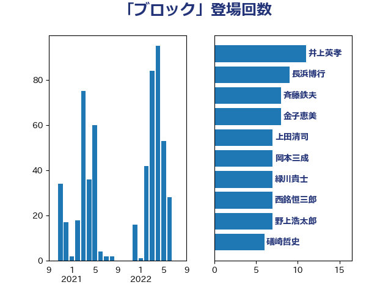

単語「ブロック」

| 井上英孝 | 日本維新の会 | 11 回 |
| 長浜博行 | 無所属 | 9 回 |
| 斉藤鉄夫 | 公明党 | 8 回 |
| 金子恵美 | 立憲民主党 | 8 回 |
| 上田清司 | 国民民主党 | 7 回 |
| 岡本三成 | 公明党 | 7 回 |
| 緑川貴士 | 立憲民主党 | 7 回 |
| 西銘恒三郎 | 自由民主党 | 7 回 |
| 野上浩太郎 | 自由民主党 | 7 回 |
| 礒崎哲史 | 国民民主党 | 6 回 |
| 青柳仁士 | 日本維新の会 | 6 回 |
| 伊波洋一 | 無所属 | 5 回 |
| 伊藤孝江 | 公明党 | 5 回 |
| 佐藤正久 | 自由民主党 | 5 回 |
| 務台俊介 | 自由民主党 | 5 回 |
| 西田実仁 | 公明党 | 5 回 |
| 赤羽一嘉 | 公明党 | 5 回 |
| 丸川珠代 | 自由民主党 | 4 回 |
| 小沢雅仁 | 立憲民主党 | 4 回 |
| 小泉進次郎 | 自由民主党 | 4 回 |
| 岸信夫 | 自由民主党 | 4 回 |
| 柚木道義 | 立憲民主党 | 4 回 |
| 横沢高徳 | 立憲民主党 | 4 回 |
| 河西宏一 | 公明党 | 4 回 |
| 浅田均 | 日本維新の会 | 4 回 |
| 片山大介 | 日本維新の会 | 4 回 |
| 空本誠喜 | 日本維新の会 | 4 回 |
| 長妻昭 | 立憲民主党 | 4 回 |
| 吉田宣弘 | 公明党 | 3 回 |
| 大塚耕平 | 国民民主党 | 3 回 |
| 山崎正恭 | 公明党 | 3 回 |
| 山添拓 | 日本共産党 | 3 回 |
| 山田俊男 | 自由民主党 | 3 回 |
| 岡田克也 | 立憲民主党 | 3 回 |
| 朝日健太郎 | 自由民主党 | 3 回 |
| 柴田巧 | 日本維新の会 | 3 回 |
| 浮島智子 | 公明党 | 3 回 |
| 神谷裕 | 立憲民主党 | 3 回 |
| 竹内真二 | 公明党 | 3 回 |
| 金城泰邦 | 公明党 | 3 回 |
| 鈴木憲和 | 自由民主党 | 3 回 |
| 鈴木敦 | 国民民主党 | 3 回 |
| 鈴木貴子 | 自由民主党 | 3 回 |
| 中山展宏 | 自由民主党 | 2 回 |
| 中川宏昌 | 公明党 | 2 回 |
| 中川正春 | 立憲民主党 | 2 回 |
| 伊藤孝恵 | 国民民主党 | 2 回 |
| 佐藤茂樹 | 公明党 | 2 回 |
| 堀場幸子 | 日本維新の会 | 2 回 |
| 小林鷹之 | 自由民主党 | 2 回 |
| 山口壯 | 自由民主党 | 2 回 |
| 山本左近 | 自由民主党 | 2 回 |
| 岸真紀子 | 立憲民主党 | 2 回 |
| 平林晃 | 公明党 | 2 回 |
| 打越さく良 | 立憲民主党 | 2 回 |
| 本村伸子 | 日本共産党 | 2 回 |
| 森屋隆 | 立憲民主党 | 2 回 |
| 浜口誠 | 国民民主党 | 2 回 |
| 田村貴昭 | 日本共産党 | 2 回 |
| 稲津久 | 公明党 | 2 回 |
| 紙智子 | 日本共産党 | 2 回 |
| 美延映夫 | 日本維新の会 | 2 回 |
| 藤田文武 | 日本維新の会 | 2 回 |
| 道下大樹 | 立憲民主党 | 2 回 |
| 金子俊平 | 自由民主党 | 2 回 |
| 音喜多駿 | 日本維新の会 | 2 回 |
| たがや亮 | れいわ新選組 | 1 回 |
| 下野六太 | 公明党 | 1 回 |
| 中川康洋 | 公明党 | 1 回 |
| 中村裕之 | 自由民主党 | 1 回 |
| 中根一幸 | 自由民主党 | 1 回 |
| 中西祐介 | 自由民主党 | 1 回 |
| 中野洋昌 | 公明党 | 1 回 |
| 中野英幸 | 自由民主党 | 1 回 |
| 吉田久美子 | 公明党 | 1 回 |
| 和田政宗 | 自由民主党 | 1 回 |
| 坂本哲志 | 自由民主党 | 1 回 |
| 坂本祐之輔 | 立憲民主党 | 1 回 |
| 大口善徳 | 公明党 | 1 回 |
| 大岡敏孝 | 自由民主党 | 1 回 |
| 大石あきこ | れいわ新選組 | 1 回 |
| 大野敬太郎 | 自由民主党 | 1 回 |
| 安江伸夫 | 公明党 | 1 回 |
| 室井邦彦 | 日本維新の会 | 1 回 |
| 宮崎雅夫 | 自由民主党 | 1 回 |
| 宮本徹 | 日本共産党 | 1 回 |
| 小沼巧 | 立憲民主党 | 1 回 |
| 小里泰弘 | 自由民主党 | 1 回 |
| 小野泰輔 | 日本維新の会 | 1 回 |
| 山井和則 | 立憲民主党 | 1 回 |
| 山本剛正 | 日本維新の会 | 1 回 |
| 山際大志郎 | 自由民主党 | 1 回 |
| 川田龍平 | 立憲民主党 | 1 回 |
| 平沢勝栄 | 自由民主党 | 1 回 |
| 庄子賢一 | 公明党 | 1 回 |
| 新垣邦男 | 立憲民主党 | 1 回 |
| 日下正喜 | 公明党 | 1 回 |
| 末松信介 | 自由民主党 | 1 回 |
| 本庄知史 | 立憲民主党 | 1 回 |
| 杉久武 | 公明党 | 1 回 |
| 梅村みずほ | 日本維新の会 | 1 回 |
| 横山信一 | 公明党 | 1 回 |
| 橋本聖子 | 無所属 | 1 回 |
| 櫛渕万里 | れいわ新選組 | 1 回 |
| 武村展英 | 自由民主党 | 1 回 |
| 武部新 | 自由民主党 | 1 回 |
| 江田憲司 | 立憲民主党 | 1 回 |
| 泉田裕彦 | 自由民主党 | 1 回 |
| 深澤陽一 | 自由民主党 | 1 回 |
| 田島麻衣子 | 立憲民主党 | 1 回 |
| 田村憲久 | 自由民主党 | 1 回 |
| 畦元将吾 | 自由民主党 | 1 回 |
| 石川博崇 | 公明党 | 1 回 |
| 石川大我 | 立憲民主党 | 1 回 |
| 石川香織 | 立憲民主党 | 1 回 |
| 石橋林太郎 | 自由民主党 | 1 回 |
| 福重隆浩 | 公明党 | 1 回 |
| 穀田恵二 | 日本共産党 | 1 回 |
| 笠井亮 | 日本共産党 | 1 回 |
| 米山隆一 | 立憲民主党 | 1 回 |
| 舩後靖彦 | れいわ新選組 | 1 回 |
| 茂木敏充 | 自由民主党 | 1 回 |
| 葉梨康弘 | 自由民主党 | 1 回 |
| 西村康稔 | 自由民主党 | 1 回 |
| 谷合正明 | 公明党 | 1 回 |
| 赤木正幸 | 日本維新の会 | 1 回 |
| 足立康史 | 日本維新の会 | 1 回 |
| 里見隆治 | 公明党 | 1 回 |
| 鈴木宗男 | 日本維新の会 | 1 回 |
| 長友慎治 | 国民民主党 | 1 回 |
| 阿達雅志 | 自由民主党 | 1 回 |
| 阿部司 | 日本維新の会 | 1 回 |
| 高木かおり | 日本維新の会 | 1 回 |